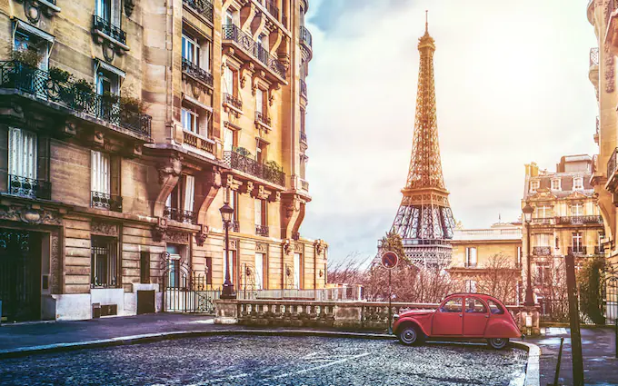
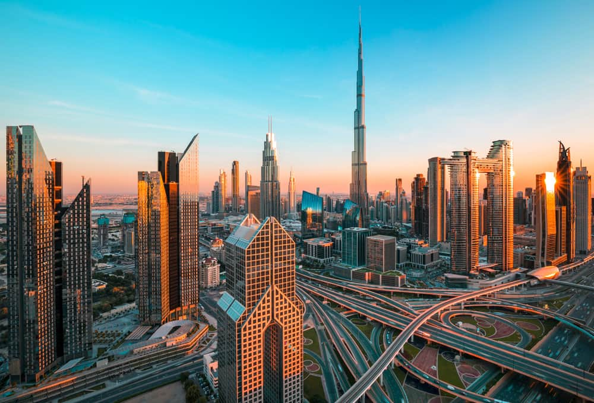

vacation destinations
PARIS
Paris is not just the capital of France; it is the capital of fashion and the city of love. Located by the
River Seine in the north of France, Paris is reputed for being the most beautiful and romantic city in the
world. It is overwhelmed with culture, history, iconic architecture, arty treasures, delicious food and
exciting fashion. Europe’s most enchanting city, Paris is known for its many monuments, especially the
Eiffel Tower, Notre-Dame Cathedral, Arc de Triomphe, Opéra Garnier, Les Invalides, etc.\r\n\r\nParis was
home to some of the best artists through history; hence, it harbors treasures and antiques from the masters
like Picasso, Van Gogh, Monet, Dalí, and Renoir. Paris (and the whole of France) is famous for its food and
drinks; from cozy little cafes to one of its many Michelin-starred restaurants – the food is prepared and
presented with perfection here. Whether you’re a first-timer or regular visitor, Paris always seems magical
as there are so many places to explore. It’s no wonder that the city is one of the most popular tourist
destinations in the world and welcomes over 45 million visitors every year.

DUBAI
The city of gold AKA Dubai is a truly international country and one of the seven Emirates in UAE. Dubai is
among the handful of countries in Asia that have developed in line with western technology but retained
their Eastern sensibility.The people of Dubai have converted desert into a modern-day Oasis. It boasts of
some of the most spectacular buildings and skyscrapers. The country is home to many famous luxury hotels
such as the Atlantis Palm, where guests can stay in an underwater room, enjoy an indoor theme park and a
shopping mall.And speaking of malls, Dubai is perhaps most famous for its annual shopping festival, which
certainly does not disappoint! The festival is held each year in January, also the busiest tourist time of
the year. The vast and magnificent malls offer great discounts on every brand there is. The best part is the
international brand launch their collections in Dubai simultaneously to their home country releases. So, you
will have no trouble keeping up with the latest fashion and trends.But if you hate shopping or need a
distraction, you can enjoy many indoor attractions such as giant aquariums, artificial snow areas, gaming
area, museums to name a few. The population of Dubai is very diverse and is strongly reflected in its
culture, food and day to day things.

SWITZERLAND
Switzerland conjures images of snowcapped peaks, glacial lakes and quaint mountainside villages. Of the finer
things in life like exquisite craftsmanship and creations from chocolates to watches. It is a place
synonymous with peace and stability. Sitting in the heart of Central Europe, it shares borders with five of
the continent’s wonderful and unique countries — France, Germany, Italy, Austria and Liechtenstein. All of
this combined puts Switzerland tourism high on almost every tra-veller’s bucket-list. Venture into the land
of the majestic Alps, of glorious cities and picturesque rural life, of castles and old town squares, of the
most beautiful blend of European influences. For this is not an experience that should be simply be seen in
photographs or the movies, it is one to be had.The amazing thing about Switzerland is that it can satisfy
your wanderlust no matter where it leads you. Mountains like Mt. Titlis, Mt. Pilatus, Jungfraujoch and Mt.
Rigi are the most popular, offering a plethora of outdoor activities, from scenic train rides to trekking
trails to skiing. Mean-while, the cities enthral with their lively ambience, spectacular culinary and
nightlife culture, shopping, leisurely lakes and parks and grand old monuments to explore. Other must-have
expe-riences include visiting the country’s luxurious spas and sampling delicious fondue.

KASHMIR
Jammu & Kashmir, a piece of heaven on earth, is the 19th largest state in India and it is located mostly all
in the Himalayan mountains.Tourists come to Kashmir valley so they too can witness this ‘heaven on earth’
and enjoy all that it offers. The resplendent Mughal Gardens see tourists walking through the gently
perfumed rows of flowers, while the elegant shikharas can be seen on Dal Lake as they skim the surface of
the pretty Dal Lake with its backdrop of mountains. The beauty is enough to transport you to another realm
altogether. Kashmir’s beauty is indeed quite bewitching, and you will want to start making plans for the
next trip right away. Kashmir is also one of the few places in India that experiences four seasons - summer,
monsoon, autumn and winter.If Kashmir is often called ‘heaven on earth’, you have Mughal emperor Jahangir to
thank for this observation. Best time to visit Kashmir is during the months of March to August. Tourists
come to Kashmir valley so they too can witness this ‘heaven on earth’ and enjoy all that it offers. During
this period two seasons are covered in Kashmir. Spring (March to early May) and Summer (early May to late
August). The blossoms of spring and the cool weather of summer creates the perfect season to visit Kashmir
during this time. The beauty is enough to transport you to another realm altogether. Kashmir’s beauty is
indeed quite bewitching, and you will want to start making plans for the next trip right away.